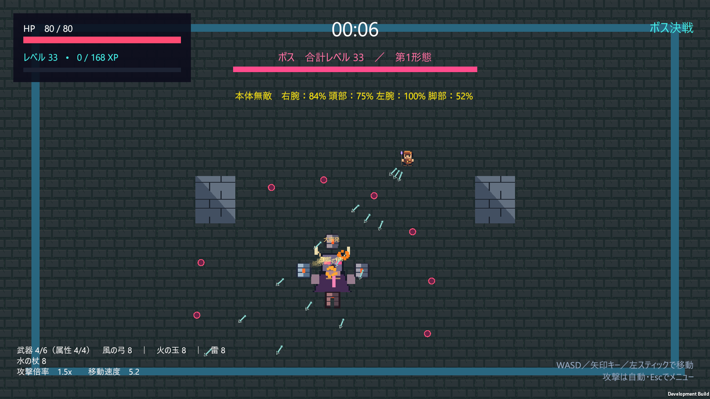

01 / 04
属性反応
マルチローグライク
ヴァンパイアサバイバー風・協力型ローグライク
属性の組み合わせによる反応と、複数人での協力プレイを組み合わせたローグライクゲーム。成長・戦闘・ボス戦を通したゲームループを実装。
↘
FEATURED PROJECT — MULTIPLAYER ROGUELIKE
ゲームプログラマー／プランナーとして、プレイヤーの心が動く瞬間をつくることを大切にしています。Unity・C#を中心に、ゲームシステム、オンライン同期、UIまで幅広く開発しています。
アイデアを形にする速さと、遊びながら磨き上げる粘り強さが持ち味です。
私について相談する ↗企画意図、担当範囲、
技術的な工夫を添えて紹介します。
01 / 04
ヴァンパイアサバイバー風・協力型ローグライク
属性の組み合わせによる反応と、複数人での協力プレイを組み合わせたローグライクゲーム。成長・戦闘・ボス戦を通したゲームループを実装。
↘CO-OP ROGUELIKE
属性の組み合わせと協力プレイで、押し寄せる敵を突破するヴァンパイアサバイバー風ローグライクです。
企画 / ゲームデザイン / 実装
Unity / C#
個人制作
武器・属性・成長要素を組み合わせ、プレイヤーごとの戦い方が生まれるゲームループを構築。ボス戦では部位ごとの耐久値を表示し、協力して攻略する目標を明確にしています。
SOCIAL DEDUCTION
ライアーズバーを研究用途に合わせて改良した、プレイヤー間の駆け引きを扱う心理戦ゲームです。
研究用機能設計 / 実装
Unity / C#
研究開発
ゲーム中の判断やプレイヤーの状態を扱えるように改良し、対戦の流れを記録・観察できる構成を設計。読み合いそのものを体験として保ちながら、実験用途に対応させています。
MULTIPLAYER POKER
複数プレイヤーのベットとアクションをリアルタイムに進行する、研究用テキサスホールデムポーカーです。
ゲーム進行 / UI / 実装
Unity / C#
研究開発
フォールド、レイズ、チェック、オールインといった選択を明確に提示し、ゲーム進行を可視化。プレイヤーのベット履歴と手札の状態を扱う対戦システムを実装しました。
MULTIPLAYER DRAW POKER
カード交換フェーズを含む、研究用のマルチプレイドローポーカーです。
ゲーム進行 / UI / 実装
Unity / C#
研究開発
相手の手札情報を隠しながら、交換・ドロー・勝敗判定までを円滑に進行。複数プレイヤーの状態を一画面で把握しやすいUIを制作しました。
ゲームプレイ、UI、ツール開発
企画、ルール設計、レベルデザイン
Photon PUN2、Photon Fusion 2、リアルタイム同期
Python、生体信号連携、プロトタイピング
LET'S MAKE SOMETHING FUN